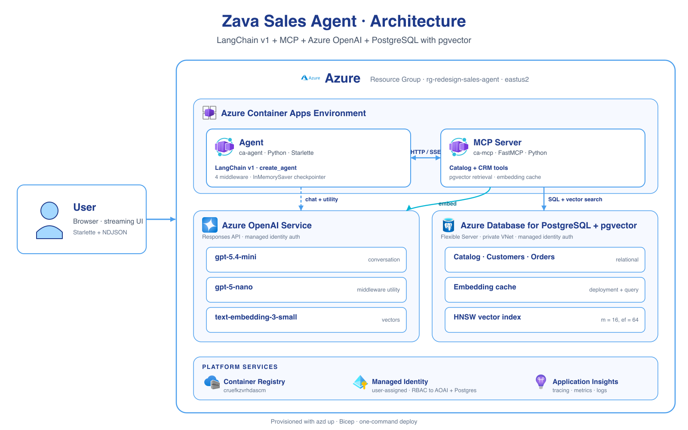

Building Effective Agents
with MCP and LangChain
Marlene Mhangami · Senior Developer Advocate · Microsoft
Hi, I'm Marlene 👩🏿💻
LangChain Azure maintainer


Why LangChain?
Meet developers where they already are
Azure usage in LangChain is growing


Goal: support every developer building AI on Azure and Microsoft Foundry, wherever they are.
What is LangChain?
LangChain is an open-source framework for Python and JavaScript that makes it easy for developers to build AI-powered applications — with a pre-built agent architecture and integrations for any model or tool.
- Standardised abstractions — one interface, 1000+ integrations, no vendor lock-in
create_agent— a proven ReAct pattern on LangGraph's durable runtime- Middleware — human-in-the-loop, context compression, PII redaction — without rewriting core logic
- Microsoft integrations — Azure OpenAI (incl. Responses API), Microsoft Foundry, Azure AI Search, Cosmos DB, PostgreSQL
Today we'll focus on building effective agents with LangChain.
Who's building with LangChain?
Intercom's customer-support agent — resolves millions of tickets autonomously.
Internal AI assistants — recruiter copilots, learning, code search.
Generative AI for elite law firms — research, drafting, due diligence.
Production-grade agents, on top of the same primitives we'll use today.
The app we'll build
A sales agent for Zava
Architecture

What is an AI agent?
What is an AI Agent?
A widely accepted definition today:
An AI Agent is an LLM that calls tools in a loop to achieve a goal.
What is MCP?
Model Context Protocol
USB-C for LLM tools
(LangChain)
(FastMCP)
(pgvector + RLS)
One protocol. Any model can call your tools. You don't rewrite the integration per framework.
- Tools — functions the model can call
- Resources — read-only context the model can fetch
- Prompts — reusable templates the host can offer
The MCP tools we expose
@mcp.tool() async def get_table_schemas(ctx): ...
@mcp.tool() async def execute_sales_query(ctx, query: str): ...
@mcp.tool() async def semantic_search_products(ctx, query, k=5): ...
@mcp.tool() def get_current_utc_date(): ...
- schemas → ground SQL in real columns, not hallucinated ones
- semantic search (pgvector) → resolve "outdoor lights" to real SKUs
- execute_sales_query → SELECT-only, scoped by RLS
The agent is creative. The DB is the bouncer.
ALTER TABLE retail.orders ENABLE ROW LEVEL SECURITY;
CREATE POLICY store_isolation ON retail.orders
USING (store_id = current_setting('app.store_id')::uuid);
-- per request, the MCP server sets the identity:
SET LOCAL app.store_id = '<store-uuid-of-caller>';
SELECT * FROM retail.orders; -- 👈 only THIS store's rows
Even if the LLM writes SELECT *, it only sees rows it's allowed to see.
MCP makes tool sharing easy — auth has to live somewhere safer than the prompt.
Three helpers around every tool call
🔎 refine_query
Rewrite the user's vague question into a tool-shaped one before searching.
🧊 summarization
Compress long tool outputs so we don't blow up the context window.
✅ validate_response
Check the answer is grounded in the data we actually retrieved.
More tokens ≠ better answers. Curate what the model sees.
What this looks like in LangChain
from langchain.agents import create_agent
from langchain_openai import ChatOpenAI
from langchain_mcp_adapters.client import MultiServerMCPClient
mcp_client = MultiServerMCPClient({
"zava-sales": {"url": "http://localhost:8000/mcp",
"transport": "streamable_http"},
})
mcp_tools = await mcp_client.get_tools() # 👈 tools come from MCP
model = ChatOpenAI(model="gpt-5-mini", use_responses_api=True)
agent = create_agent(
model=model,
tools=mcp_tools,
prompt=system_prompt,
)
Tools you don't have to build
🐍 Code interpreter
Run Python on tool results — pivot tables, stats, plots.
🌐 Web search
Look up live pricing, competitors, news.
🖼️ Image generation
"Show me a chart of sales by category, in pastel."
↳ insert VS Code screenshots of these in action
Built-in tools, in code
tools = mcp_tools + [
{"type": "code_interpreter", "container": {"type": "auto"}},
{"type": "web_search"},
{"type": "image_generation"},
]
agent = create_agent(model=model, tools=tools, prompt=system_prompt)
Built-ins run on OpenAI's side. MCP tools run on yours. The model picks — one agent, every superpower.
Different steps, different prompts & tools
One mega-prompt with every tool is a recipe for wrong answers. Split the loop:
agent = create_agent(model, tools, prompt=base_prompt)
agent = agent.apply_step_config({
"refine": {"prompt": refine_prompt, "tools": []},
"retrieve": {"prompt": retrieve_prompt, "tools": [semantic_search,
get_table_schemas]},
"answer": {"prompt": answer_prompt, "tools": [execute_sales_query,
code_interpreter]},
"verify": {"prompt": verify_prompt, "tools": []},
})
- Each step only sees the tools it actually needs
- Each step has a tighter, focused system prompt
- Easier to evaluate — you can score each step independently
How do we know it's working?
📜 Traces
Every step, every tool call — replay in LangSmith.
🧱 Grounding
Did the answer cite real rows? Was the SQL valid?
📊 Evals
Run a fixed test set on every change — watch regressions.
📈 Monitoring
Sentiment, drop-off, retries — what users actually do.
Tip: ask the model itself — "what could go wrong with this answer?" — and use that to seed your eval set.
Resources
- Azure-Samples/langchain-agent-python — the demo repo
- AI Tour WRK540 — longer workshop on the same idea
- python.langchain.com — LangChain docs
- create_agent — the agent primitive
- modelcontextprotocol.io — MCP spec
- OpenAI Responses API
- pgvector · Postgres RLS
- LangSmith — tracing & evals
Build something
your data trusts.
Marlene Mhangami